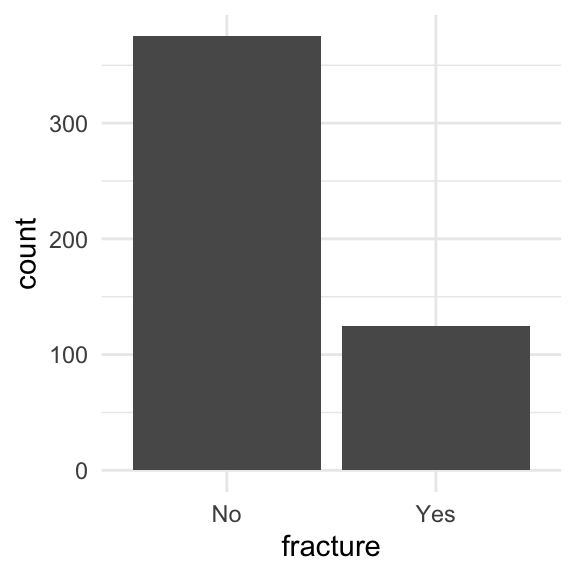
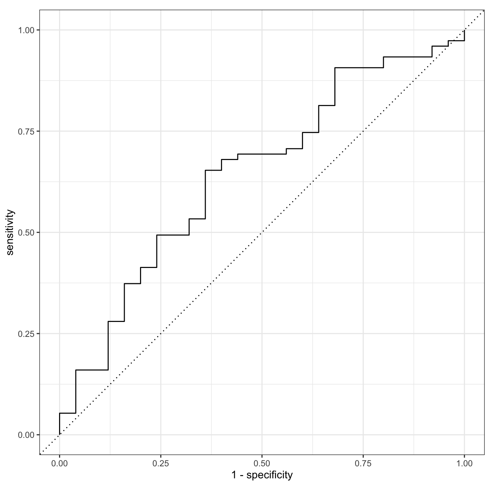
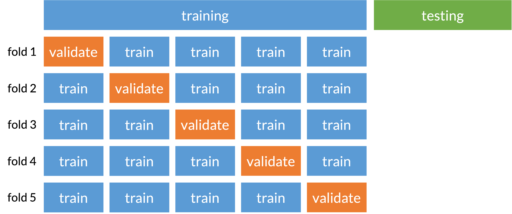

# model
model = logistic_reg()
# recipe
recipe = recipe(fracture ~ priorfrac + age_c, data = glow1) %>%
step_dummy(priorfrac) %>%
step_interact(terms = ~ age_c:starts_with("priorfrac"))
# workflow
workflow = workflow() %>% add_model(model) %>% add_recipe(recipe)
fit = workflow %>% fit(data = glow1)Lesson 15: Model Building
With an emphasis on prediction
Learning Objectives
Understand the place of LASSO regression within association and prediction modeling for binary outcomes.
Recognize the process for
tidymodelsUnderstand how penalized regression is a form of model/variable selection.
Perform LASSO regression on a dataset using R and the general process for classification methods.
Learning Objectives
- Understand the place of LASSO regression within association and prediction modeling for binary outcomes.
Recognize the process for
tidymodelsUnderstand how penalized regression is a form of model/variable selection.
Perform LASSO regression on a dataset using R and the general process for classification methods.
Some important definitions
Model selection: picking the “best” model from a set of possible models
Models will have the same outcome, but typically differ by the covariates that are included, their transformations, and their interactions
“Best” model is defined by the research question and by how you want to answer it!
Model selection strategies: a process or framework that helps us pick our “best” model
- These strategies often differ by the approach and criteria used to the determine the “best” model
- Overfitting: result of fitting a model so closely to our particular sample data that it cannot be generalized to other samples (or the population)
Bias-variance trade off
Recall from 512/612: MSE can be written as a function of the bias and variance
\[ MSE = \text{bias}\big(\widehat\beta\big)^2 + \text{variance}\big(\widehat\beta\big) \]
- We no longer use MSE in logistic regression to find the best fit model, BUT the idea between the bias and variance trade off holds!
For the same data:
More covariates in model: less bias, more variance
- Potential overfitting: with new data does our model still hold?
Less covariates in model: more bias, less variance
- More bias bc more likely that were are not capturing the true underlying relationship with less variables

The goals of association vs. prediction
Association / Explanatory / One variable’s effect
Goal: Understand one variable’s (or a group of variable’s) effect on the response after adjusting for other factors
Mainly interpret odds ratios of the variable that is the focus of the study
Prediction
Goal: to calculate the most precise prediction of the response variable
Interpreting coefficients is not important
Choose only the variables that are strong predictors of the response variable
- Excluding irrelevant variables can help reduce widths of the prediction intervals
Model selection strategies for categorical outcomes
Association / Explanatory / One variable’s effect
- Selection of potential models is tied more with the research context with some incorporation of prediction scores
Pre-specification of multivariable model
Purposeful model selection
- “Risk factor modeling”
Change in Estimate (CIE) approaches
- Will learn in Survival Analysis (BSTA 514)
Prediction
- Selection of potential models is fully dependent on prediction scores
Logistic regression with more refined model selection
- Regularization techniques (LASSO, Ridge, Elastic net)
Machine learning realm
- Decision trees, random forest, k-nearest neighbors, Neural networks
Before I move on…
We CAN use purposeful selection from last quarter in any type of generalized linear model (GLM)
- This includes logistic regression!
The best documented information on purposeful selection is in the Hosmer-Lemeshow textbook on logistic regression
Purposeful selection starts on page 89 (or page 101 in the pdf)
I will not discuss purposeful selection in this course
- Be aware that this is a tool that you can use in any regression!
Okay, so prediction of categorical outcomes
Classification: process of predicting categorical responses/outcomes
- Assigning a category outcome based on an observation’s predictors
Note: we’ve already done a lot of work around predicting probabilities within logistic regression
- Can we take those predicted probabilities one step further to predict the binary outcome??
Common classification methods (good site on brief explanation of each)
- Logistic regression
- Naive Bayes
- k-Nearest Neighbor (KNN)
- Decision Trees
- Support Vector Machines (SVMs)
- Neural Networks
Logistic regression is a classification method
- But to be a good classifier, our logistic regression model needs to built a certain way
Prediction depends on type of variable/model selection!
- This is when it can become machine learning
So the big question is: how do we select this model??
- Regularized techniques, aka penalized regression
Poll Everywhere Question 1
Learning Objectives
- Understand the place of LASSO regression within association and prediction modeling for binary outcomes.
- Recognize the process for
tidymodels
Understand how penalized regression is a form of model/variable selection.
Perform LASSO regression on a dataset using R and the general process for classification methods.
Before I get really into things!!
tidymodelsis a great package when we are performing predictionOne problem: it uses very different syntax for model fitting than we are used to…
tidymodelssyntax dictates that we need to define:- A model
- A recipe
- A workflow
tidymodels with GLOW
To fit our logistic regression model with the interaction between age and prior fracture, we use:
| term | estimate | std.error | statistic | p.value | conf.low | conf.high |
|---|---|---|---|---|---|---|
| (Intercept) | −1.376 | 0.134 | −10.270 | 0.000 | −1.646 | −1.120 |
| age_c | 0.063 | 0.015 | 4.043 | 0.000 | 0.032 | 0.093 |
| priorfrac_Yes | 1.002 | 0.240 | 4.184 | 0.000 | 0.530 | 1.471 |
| age_c_x_priorfrac_Yes | −0.057 | 0.025 | −2.294 | 0.022 | −0.107 | −0.008 |
Same as results from previous lessons
glow_m3 = glm(fracture ~ priorfrac + age_c + priorfrac*age_c,
data = glow1, family = binomial)tidy(glow_m3, conf.int = T) %>% gt() %>%
tab_options(table.font.size = 35) %>%
fmt_number(decimals = 3)| term | estimate | std.error | statistic | p.value | conf.low | conf.high |
|---|---|---|---|---|---|---|
| (Intercept) | −1.376 | 0.134 | −10.270 | 0.000 | −1.646 | −1.120 |
| priorfracYes | 1.002 | 0.240 | 4.184 | 0.000 | 0.530 | 1.471 |
| age_c | 0.063 | 0.015 | 4.043 | 0.000 | 0.032 | 0.093 |
| priorfracYes:age_c | −0.057 | 0.025 | −2.294 | 0.022 | −0.107 | −0.008 |
Interaction model: \[\begin{aligned} \text{logit}\left(\widehat\pi(\mathbf{X})\right) & = \widehat\beta_0 &+ &\widehat\beta_1\cdot I(\text{PF}) & + &\widehat\beta_2\cdot Age& + &\widehat\beta_3 \cdot I(\text{PF}) \cdot Age \\ \text{logit}\left(\widehat\pi(\mathbf{X})\right) & = -1.376 &+ &1.002\cdot I(\text{PF})& + &0.063\cdot Age& -&0.057 \cdot I(\text{PF}) \cdot Age \end{aligned}\]
- Reminder of main effects and interactions
Learning Objectives
Understand the place of LASSO regression within association and prediction modeling for binary outcomes.
Recognize the process for
tidymodels
- Understand how penalized regression is a form of model/variable selection.
- Perform LASSO regression on a dataset using R and the general process for classification methods.
Penalized regression
Basic idea: We are running regression, but now we want to incentivize our model fit to have less predictors
- Include a penalty to discourage too many predictors in the model
- Also known as shrinkage or regularization methods
- Penalty will reduce coefficient values to zero (or close to zero) if the predictor does not contribute much information to predicting our outcome
We need a tuning parameter that determines the amount of shrinkage called lambda/\(\lambda\)
- How much do we want to penalize additional predictors?
Poll Everywhere Question 2
Three types of penalized regression
Main difference is the type of penalty used
Ridge regression
Penalty called L2 norm, uses sqaured values
Pros
- Reduces overfitting
- Handles \(p>n\)
- Handles collinearity
Cons
- Does not shrink coefficients to 0
- Difficult to interpret
Lasso regression
- Penalty called L1 norm, uses absolute values
- Pros
- Reduces overfitting
- Shrinks coefficients to 0
- Cons
- Cannot handle \(p>n\)
- Does not handle multicollinearity well
Elastic net regression
L1 and L2 used, best of both worlds
Pros
- Reduces overfitting
- Handles \(p>n\)
- Handles collinearity
- Shrinks coefficients to 0
Cons
- More difficult to do than other two
Learning Objectives
Understand the place of LASSO regression within association and prediction modeling for binary outcomes.
Recognize the process for
tidymodelsUnderstand how penalized regression is a form of model/variable selection.
- Perform LASSO regression on a dataset using R and the general process for classification methods.
Overview of the process
- Split data into training and testing datasets
Perform our classification method on training set
- This is where we will use penalized regression!
- Measure predictive accuracy on testing set
Example to be used: GLOW Study
- From GLOW (Global Longitudinal Study of Osteoporosis in Women) study
- Outcome variable: any fracture in the first year of follow up (FRACTURE: 0 or 1)
Risk factor/variable of interest: history of prior fracture (PRIORFRAC: 0 or 1)Potential confounder or effect modifier: age (AGE, a continuous variable)Center age will be used! We will center around the rounded mean age of 69 years old
Crossed out because we are no longer attached to specific predictors and their association with fracture
- Focused on predicting fracture with whatever variables we can!
Step 1: Splitting data
Training: act of creating our prediction model based on our observed data
- Supervised: Means we keep information on our outcome while training
- Testing: act of measuring the predictive accuracy of our model by trying it out on new data
When we use data to create a prediction model, we want to test our prediction model on new data
- Helps make sure prediction model can be applied to other data outside of the data that was used to create it!
- So an important first step in prediction modeling is to split our data into a training set and a testing set!
Step 1: Splitting data
Training set
- Sandbox for model building
- Spend most of your time using the training set to develop the model
- Majority of the data (usually 80%)
Testing set
- Held in reserve to determine efficacy of one or two chosen models
- Critical to look at it once at the end, otherwise it becomes part of the modeling process
- Remainder of the data (usually 20%)
- Slide content from Data Science in a Box
Poll Everywhere Question 3
Step 1: Splitting data
When splitting data, we need to be conscious of the proportions of our outcomes
Is there imbalance within our outcome?
We want to randomly select observations but make sure the proportions of No and Yes stay the same
We stratify by the outcome, meaning we pick Yes’s and No’s separately for the training set
ggplot(glow1, aes(x = fracture)) + geom_bar()
Side note: took out
bmiandweightbc we have multicollinearity issues- Combo of I hate these variables and my previous work in the LASSO identified these as not important
glow = glow1 %>%
dplyr::select(-sub_id, -site_id, -phy_id, -age, -bmi, -weight)Step 1: Splitting data
From package
rsamplewithintidyverse, we can useinitial_split()to create training and testing data- Use
stratato stratify by fracture
- Use
glow_split = initial_split(glow, strata = fracture, prop = 0.8)
glow_split<Training/Testing/Total>
<400/100/500>- Then we can pull the training and testing data into their own datasets
glow_train = training(glow_split)
glow_test = testing(glow_split)Step 1: Splitting data: peek at the split
glimpse(glow_train)Rows: 400
Columns: 10
$ priorfrac <fct> No, No, Yes, No, No, Yes, No, Yes, Yes, No, No, No, No, No, …
$ height <int> 158, 160, 157, 160, 152, 161, 150, 153, 156, 166, 153, 160, …
$ premeno <fct> No, No, No, No, No, No, No, No, No, No, No, Yes, No, No, No,…
$ momfrac <fct> No, No, Yes, No, No, No, No, No, No, No, Yes, No, No, No, No…
$ armassist <fct> No, No, Yes, No, No, No, No, No, No, No, No, No, Yes, No, No…
$ smoke <fct> No, No, No, No, No, Yes, No, No, No, No, Yes, No, No, No, No…
$ raterisk <fct> Same, Same, Less, Less, Same, Same, Less, Same, Same, Less, …
$ fracscore <int> 1, 2, 11, 5, 1, 4, 6, 7, 7, 0, 4, 1, 4, 2, 2, 7, 2, 1, 4, 5,…
$ fracture <fct> No, No, No, No, No, No, No, No, No, No, No, No, No, No, No, …
$ age_c <dbl> -7, -4, 19, 13, -8, -2, 15, 13, 17, -11, -2, -5, -1, -2, 0, …glimpse(glow_test)Rows: 100
Columns: 10
$ priorfrac <fct> No, No, No, No, No, No, No, No, Yes, Yes, No, No, No, No, No…
$ height <int> 167, 162, 165, 158, 153, 170, 154, 171, 142, 152, 166, 154, …
$ premeno <fct> No, No, No, Yes, No, Yes, Yes, Yes, Yes, No, No, No, No, No,…
$ momfrac <fct> No, No, No, No, No, Yes, No, No, Yes, No, No, No, No, No, No…
$ armassist <fct> Yes, No, Yes, No, Yes, No, Yes, No, No, No, No, No, No, No, …
$ smoke <fct> Yes, Yes, No, No, No, No, No, No, No, No, No, No, No, No, No…
$ raterisk <fct> Same, Less, Less, Greater, Same, Same, Same, Same, Same, Sam…
$ fracscore <int> 3, 1, 5, 1, 8, 3, 7, 1, 6, 7, 0, 2, 0, 0, 1, 2, 2, 8, 4, 3, …
$ fracture <fct> No, No, No, No, No, No, No, No, No, No, No, No, No, No, No, …
$ age_c <dbl> -13, -10, 3, -8, 17, 0, 6, -5, 1, 17, -11, -6, -10, -12, -6,…Step 2: Fit LASSO penalized logistic regression model
Using Lasso penalized regression!
We can simply set up a penalized regression model
lasso_mod = logistic_reg(penalty = 0.001, mixture = 1) %>%
set_engine("glmnet")glmnettakes the basic fitting ofglmand adds penalties!- In
tidymodelswe set an engine that will fit the model
- In
mixtureoption let’s us pick the penaltymixture = 0for Ridge regressionmixture = 1for Lasso regression0 < mixture < 1for Elastic net regression
Step 2: Fit LASSO: Main effects
glow_rec_main = recipe(fracture ~ ., data = glow_train) %>%
step_dummy(priorfrac, premeno, momfrac, armassist, smoke, raterisk)
glow_workflow_main = workflow() %>%
add_model(lasso_mod) %>% add_recipe(glow_rec_main)
glow_fit_main = glow_workflow_main %>% fit(glow_train)Step 2: Fit LASSO: Main effects: Identify variables
library(vip)
Attaching package: 'vip'The following object is masked from 'package:utils':
vivi_data_main = glow_fit_main %>%
pull_workflow_fit() %>%
vi(lambda = 0.001) %>%
filter(Importance != 0)Warning: `pull_workflow_fit()` was deprecated in workflows 0.2.3.
ℹ Please use `extract_fit_parsnip()` instead.vi_data_main# A tibble: 9 × 3
Variable Importance Sign
<chr> <dbl> <chr>
1 raterisk_Greater 0.559 POS
2 momfrac_Yes 0.542 POS
3 priorfrac_Yes 0.493 POS
4 raterisk_Same 0.438 POS
5 smoke_Yes 0.376 NEG
6 premeno_Yes 0.285 POS
7 fracscore 0.197 POS
8 armassist_Yes 0.146 POS
9 height 0.0382 NEG - Looks like age is removed!
Step 2: Fit LASSO: Main effects + interactions
- We want to include interactions in our regression
- The main effect model will be our starting point
- Otherwise, we may drop main effects but not their interactions
- Cannot do that: see hierarchy principle
- I remove
age_cfrom this section because main effects did not include it
glow_rec_int = recipe(fracture ~ ., data = glow_train) %>%
update_role(age_c, new_role = "dont_use") %>%
step_dummy(priorfrac, premeno, momfrac, armassist, smoke, raterisk) %>%
step_interact(terms = ~ all_predictors():all_predictors())
glow_workflow_int = workflow() %>%
add_model(lasso_mod) %>% add_recipe(glow_rec_int)
glow_fit_int = glow_workflow_int %>% fit(glow_train)Step 2: Fit LASSO: Identify interactions
vi_data_int = glow_fit_int %>%
pull_workflow_fit() %>%
vi(lambda = 0.001) %>%
filter(Importance != 0)
vi_data_int# A tibble: 34 × 3
Variable Importance Sign
<chr> <dbl> <chr>
1 smoke_Yes 4.29 NEG
2 smoke_Yes_x_raterisk_Greater 3.89 POS
3 smoke_Yes_x_raterisk_Same 3.14 POS
4 premeno_Yes_x_smoke_Yes 3.00 NEG
5 momfrac_Yes_x_armassist_Yes 2.82 NEG
6 priorfrac_Yes_x_premeno_Yes 2.50 NEG
7 priorfrac_Yes 1.82 POS
8 armassist_Yes_x_smoke_Yes 1.44 POS
9 premeno_Yes_x_raterisk_Greater 1.31 POS
10 momfrac_Yes_x_smoke_Yes 1.17 POS
# ℹ 24 more rows- This is where things got a little annoying for me…
Step 2: Fit LASSO: Identify interactions
- I combed through the column names of the results to find the interactions
vi_data_int$Variable [1] "smoke_Yes" "smoke_Yes_x_raterisk_Greater"
[3] "smoke_Yes_x_raterisk_Same" "premeno_Yes_x_smoke_Yes"
[5] "momfrac_Yes_x_armassist_Yes" "priorfrac_Yes_x_premeno_Yes"
[7] "priorfrac_Yes" "armassist_Yes_x_smoke_Yes"
[9] "premeno_Yes_x_raterisk_Greater" "momfrac_Yes_x_smoke_Yes"
[11] "priorfrac_Yes_x_momfrac_Yes" "priorfrac_Yes_x_armassist_Yes"
[13] "premeno_Yes_x_armassist_Yes" "momfrac_Yes_x_raterisk_Same"
[15] "priorfrac_Yes_x_raterisk_Greater" "armassist_Yes_x_raterisk_Greater"
[17] "fracscore_x_momfrac_Yes" "priorfrac_Yes_x_smoke_Yes"
[19] "premeno_Yes_x_raterisk_Same" "fracscore_x_priorfrac_Yes"
[21] "fracscore_x_premeno_Yes" "raterisk_Same"
[23] "fracscore" "fracscore_x_raterisk_Greater"
[25] "armassist_Yes_x_raterisk_Same" "fracscore_x_smoke_Yes"
[27] "height" "momfrac_Yes_x_raterisk_Greater"
[29] "priorfrac_Yes_x_raterisk_Same" "fracscore_x_raterisk_Same"
[31] "height_x_raterisk_Greater" "height_x_premeno_Yes"
[33] "height_x_fracscore" "height_x_armassist_Yes" Step 2: Fit LASSO: Identify interactions
- I combed through the column names of the results to find the interactions
- I used ChatGPT to help me because I’m pretty new to
tidymodels: let’s view what I asked
- I used ChatGPT to help me because I’m pretty new to
interactions = vi_data_int %>% filter(grepl("_x_", Variable)) %>%
select(Variable) %>% separate(Variable, "_x_")Warning: Expected 1 pieces. Additional pieces discarded in 29 rows [1, 2, 3, 4, 5, 6, 7,
8, 9, 10, 11, 12, 13, 14, 15, 16, 17, 18, 19, 20, ...].interaction_terms = ~ (all_predictors()^2) - #Makes interactions b/w all predictors
fracscore:starts_with("premeno") - # Removes this interaction
height:starts_with("premeno") -
height:starts_with("smoke") -
height:starts_with("momfrac")Step 2: Fit LASSO: Create recipe and fit model (from LASSO)
- This is not the typical procedure for LASSO, but the
tidymodelsframework for interactions did not let me keep all main effects when looking at my interactions
glow_rec_int2 = recipe(fracture ~ ., data = glow_train) %>%
update_role(age_c, new_role = "dont_use") %>%
step_dummy(priorfrac, premeno, momfrac, armassist, smoke, raterisk) %>%
step_interact(terms = interaction_terms)
log_model = logistic_reg()
glow_workflow_int2 = workflow() %>%
add_model(log_model) %>% add_recipe(glow_rec_int2)
glow_fit_int2 = glow_workflow_int2 %>% fit(glow_train)Step 2: Fit LASSO: Look at model fit
print(tidy(glow_fit_int2), n=60)# A tibble: 42 × 5
term estimate std.error statistic p.value
<chr> <dbl> <dbl> <dbl> <dbl>
1 (Intercept) 3.09 10.3 0.300 0.764
2 height -0.0415 0.0637 -0.652 0.515
3 fracscore -2.92 2.15 -1.36 0.175
4 priorfrac_Yes 15.1 8.61 1.75 0.0793
5 premeno_Yes -0.805 1.14 -0.709 0.478
6 momfrac_Yes -1.71 1.74 -0.984 0.325
7 armassist_Yes 18.5 10.7 1.73 0.0838
8 smoke_Yes -22.8 838. -0.0272 0.978
9 raterisk_Same 16.0 10.1 1.59 0.112
10 raterisk_Greater 1.13 9.16 0.123 0.902
11 height_x_fracscore 0.0215 0.0136 1.58 0.113
12 height_x_priorfrac_Yes -0.0825 0.0531 -1.55 0.120
13 height_x_armassist_Yes -0.114 0.0645 -1.77 0.0762
14 height_x_raterisk_Same -0.0940 0.0623 -1.51 0.131
15 height_x_raterisk_Greater 0.00238 0.0563 0.0423 0.966
16 fracscore_x_priorfrac_Yes -0.373 0.177 -2.10 0.0353
17 fracscore_x_momfrac_Yes 0.608 0.313 1.94 0.0520
18 fracscore_x_armassist_Yes -0.111 0.178 -0.626 0.531
19 fracscore_x_smoke_Yes 0.604 0.564 1.07 0.284
20 fracscore_x_raterisk_Same -0.257 0.209 -1.23 0.217
21 fracscore_x_raterisk_Greater -0.318 0.212 -1.50 0.133
22 priorfrac_Yes_x_premeno_Yes -2.72 1.06 -2.56 0.0104
23 priorfrac_Yes_x_momfrac_Yes -1.35 1.35 -1.00 0.317
24 priorfrac_Yes_x_armassist_Yes 1.45 0.820 1.76 0.0779
25 priorfrac_Yes_x_smoke_Yes -0.329 1.68 -0.196 0.845
26 priorfrac_Yes_x_raterisk_Same 0.122 0.837 0.146 0.884
27 priorfrac_Yes_x_raterisk_Greater 0.838 0.916 0.915 0.360
28 premeno_Yes_x_momfrac_Yes 0.304 1.58 0.192 0.848
29 premeno_Yes_x_armassist_Yes 1.73 0.923 1.87 0.0615
30 premeno_Yes_x_smoke_Yes -3.98 1.84 -2.17 0.0300
31 premeno_Yes_x_raterisk_Same 0.716 1.16 0.620 0.535
32 premeno_Yes_x_raterisk_Greater 1.71 1.19 1.44 0.150
33 momfrac_Yes_x_armassist_Yes -3.60 1.43 -2.52 0.0118
34 momfrac_Yes_x_smoke_Yes 2.73 2.67 1.02 0.307
35 momfrac_Yes_x_raterisk_Same 1.87 1.33 1.41 0.160
36 momfrac_Yes_x_raterisk_Greater 0.730 1.33 0.548 0.583
37 armassist_Yes_x_smoke_Yes 1.58 1.67 0.948 0.343
38 armassist_Yes_x_raterisk_Same 0.690 0.893 0.774 0.439
39 armassist_Yes_x_raterisk_Greater -0.247 0.975 -0.253 0.800
40 smoke_Yes_x_raterisk_Same 19.5 838. 0.0232 0.981
41 smoke_Yes_x_raterisk_Greater 20.0 838. 0.0239 0.981
42 raterisk_Same_x_raterisk_Greater NA NA NA NA Poll Everywhere Question 4
Step 3: Prediction on testing set
glow_test_pred = predict(glow_fit_int2, new_data = glow_test, type = "prob") %>%
bind_cols(glow_test)glow_test_pred %>%
roc_auc(truth = fracture,
.pred_No)# A tibble: 1 × 3
.metric .estimator .estimate
<chr> <chr> <dbl>
1 roc_auc binary 0.644glow_test_pred %>%
roc_curve(truth = fracture, .pred_No) %>%
autoplot()
Step 3: Prediction on testing set
glow_test_pred = predict(glow_fit_int2, new_data = glow_test, type = "prob") %>%
bind_cols(glow_test)glow_test_pred %>%
roc_auc(truth = fracture,
.pred_No)# A tibble: 1 × 3
.metric .estimator .estimate
<chr> <chr> <dbl>
1 roc_auc binary 0.644
Why is this AUC worse than the one we saw with prior fracture, age, and their interaction?
- Only 1 training and testing set: can overfit training and perform poorly on testing
- We did not tune our penalty
- Our testing set only has 100 observations!
glow_test_pred %>%
roc_curve(truth = fracture, .pred_No) %>%
autoplot()
Cross-validation (specifically k-fold)
Prevents overfitting to one set of training data
Split data into folds that train and validate model selection
Basically subsection of training and testing (called validating) before truly testing on our original testing set

Solutions / Resources (beyond our class right now)
Use a tuning parameter for our penalty
Basically, we need to figure out what the best penalty is for our model
We use the training set to determine the best penality
Videos that includes tuning parameter with LASSO
Cross-validation
For complete video of machine learning with LASSO, cross-validation, and tuning parameters
See “Unit 5 - Deck 4: Machine learning” on this Data Science in a Box page
- Video goes through an example with more complicated data, but can be followed with our work!
Summary
- Revisited model selection techniques and discussed how a binary outcome can be treated differently than a continuous outcome
- Discussed association vs prediction modeling
- Discussed classification: a type of machine learning!
- Introduced penalized regression as a classification method
- Performed penalized regression (specifically LASSO) to select a prediction model
- Process presented today has major flaws
- We did not tune our parameter
- We did not perform cross validation
For your Lab 4
You can use purposeful selection, like we did last quarter
If you want to focus on association modeling!
A good way to practice this again if you struggled with it previously
You can try out LASSO regression
- If you want to focus on prediction modeling!
- And if you want to stretch your R coding skills